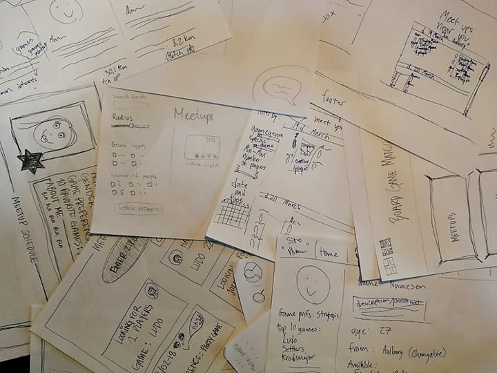

Focus
user-centered design, web application, software engineering process, innovation
Problem area
People in Aalborg that have a small social group and wish to play board games with others have a hard time finding peers for this.
Their solution is to either write on facebook groups or by going to board game cafes and using physical signs for showing they are open to others joining. Neither method,
as revealed by the research, showed to be highly effective.
Approach
For this project the team chose to follow an expert mindset, with a medium degree of user involvement,
with users being included both in the early stage of development and also in the following phases.
By analysing the number of team members involved, the need for flexible requirements and main goal of the project we chose to follow an agile approach. Due to the nature of the project we have also chosen to have this in combination with a plan-driven approach, seeing as we were in an academic context that prompted us to have thorough documentation of the process.
During the development period we have worked in two-week sprints consisting of planning, reviewing and retrospective. In order to manage possible uncertainties as well as identifying risk factors we carried out a series of risk management activities which resulted in a risk mitigation, monitoring and management plan.
By analysing the number of team members involved, the need for flexible requirements and main goal of the project we chose to follow an agile approach. Due to the nature of the project we have also chosen to have this in combination with a plan-driven approach, seeing as we were in an academic context that prompted us to have thorough documentation of the process.
During the development period we have worked in two-week sprints consisting of planning, reviewing and retrospective. In order to manage possible uncertainties as well as identifying risk factors we carried out a series of risk management activities which resulted in a risk mitigation, monitoring and management plan.
Survey
The initial research steps were aimed at getting an overview of the problem. We started by conducting a survey with the purpose
of obtaining a general idea on whether there was a real need for a system that brings together people that are interested in board game gatherings.
This method was chosen due to the need of gathering a large amount of responses from potential users, while also collecting general knowledge about
the users’ needs and demographic data in order to better determine what was the target group. The survey was carried out in Danish, as the system itself
was planned to be released in a Danish context and was conducted online allowing a fast reach over a short period of time with a relatively low cost.
The survey was divided into two sections, the first one aimed at finding general needs and opinions in regards to the difficulty of finding other players and the second one where the respondents were presented with a short description of our idea following a series of questions about it. The survey had a total of 575 respondents with 54% of them being males and 45% females with a majority of respondents situated between 18-37 years old.
The results from the survey revealed that 60% of respondents faced difficulties at some point in finding other people to play board games with. This confirmed our initial presumption that there is indeed a need for creating a tool to ease these difficulties. Related to this finding it was also revealed that a genre or specific game also had an influence in the degree of difficulty of finding other players. After being presented with our idea of having a web instrument for finding board game players, more than half of the respondents answered they would be interested in using it.
The survey was divided into two sections, the first one aimed at finding general needs and opinions in regards to the difficulty of finding other players and the second one where the respondents were presented with a short description of our idea following a series of questions about it. The survey had a total of 575 respondents with 54% of them being males and 45% females with a majority of respondents situated between 18-37 years old.
The results from the survey revealed that 60% of respondents faced difficulties at some point in finding other people to play board games with. This confirmed our initial presumption that there is indeed a need for creating a tool to ease these difficulties. Related to this finding it was also revealed that a genre or specific game also had an influence in the degree of difficulty of finding other players. After being presented with our idea of having a web instrument for finding board game players, more than half of the respondents answered they would be interested in using it.
Interviews
The survey was followed by a series of semi-structured interviews with 8 board game players in order to obtain in-depth knowledge on how
the players engage in this activity. The motivation behind choosing to also carry out interviews was to gain deeper insight into what the respondents
opinions were, in contrast to the survey which benefited us on a quantitative level, but allowed only for pre-planned inquiries.
By choosing semi-structured interviews we also aimed to obtain some specific data from the respondents while also leaving room for additional
topics to be revealed. One interview was carried out with the owner of a board game cafe we collaborated with. This was done in order to also grasp
the perspective of someone who interacts with this activity on a daily basis. The interviews were subsequently transcribed and color coded following a
guide the group agreed upon consisting of four different themes: characteristic, behavior, problems and needs.
The interview with the owner revealed that the cafe has a wooden sign that signals whether people are in need of an additional player, but this brings up social problems, where a person might feel intimidated by having to be so straightforward in approaching a large group that they want to join. This is also not very effective seeing as at the cafe people usually already come in groups, rather than alone. There is also a physical board set up for matching people but this has the same shortcoming as the sign, people that are alone don’t go to the cafe.
From the interviews with the other informants it was revealed that among the reasons they engage in this type of activity is the social aspect which weighs more than other motivations. This usually happens at board game cafes where the atmosphere plays a big role in creating a good environment for doing this. Moreover, it was revealed that even though the social aspect is one of the main motivators, the informats have had difficulties in finding like minded people to play with. The main medium through which they usually search for additional players are Facebook groups which do not provide all the desired features needed for searching and creating meetups in this regard. From this it was clear that there was a need for a more custom experience that would allow for the introduction of additional elements such as choosing a specific game, provide a calendar for multiple meetups, and categorizing information.
The interview with the owner revealed that the cafe has a wooden sign that signals whether people are in need of an additional player, but this brings up social problems, where a person might feel intimidated by having to be so straightforward in approaching a large group that they want to join. This is also not very effective seeing as at the cafe people usually already come in groups, rather than alone. There is also a physical board set up for matching people but this has the same shortcoming as the sign, people that are alone don’t go to the cafe.
From the interviews with the other informants it was revealed that among the reasons they engage in this type of activity is the social aspect which weighs more than other motivations. This usually happens at board game cafes where the atmosphere plays a big role in creating a good environment for doing this. Moreover, it was revealed that even though the social aspect is one of the main motivators, the informats have had difficulties in finding like minded people to play with. The main medium through which they usually search for additional players are Facebook groups which do not provide all the desired features needed for searching and creating meetups in this regard. From this it was clear that there was a need for a more custom experience that would allow for the introduction of additional elements such as choosing a specific game, provide a calendar for multiple meetups, and categorizing information.
Design
After gaining a better understanding of the users needs and the overall context we moved to the design stage.
We developed a PACT analysis based on Benyons (2014) description and further elaborated the initial requirements for the system using the MoSCow rules.
Additionally, we generated use cases that aim to cover activities that should happen in the application domain for several features of the system such
as match profiles and meetup creation.
After this stage, we proceed with the design of the prototypes. We started off with a rapid prototyping session in order to explore ideas for design,
key functionally and navigational patterns. This resulted in a lo-fi prototype from each of the members in the team which were put together in order
to reach a common understanding on how the system should be designed. These paper prototypes were sketched individually
in order to avoid influencing each other. The evaluation consisted of finding commonalities in each of the lo-fi prototypes and discussion
in detail the differences and their potential inclusion in the system. Following this we combined the elements decided upon during our discussion
in a final lo-fi prototype consisting of the most essential functions of the system: landing page, main page, profile, matchmaking and meetup.
The lo-fi prototype was evaluated with our domain expert, the owner of the board game cafe. We chose him to conduct this evaluation seeing as he had experience in managing board game activities and creating meetups for this. The results from the evaluation indicated that the overall design was appropriate with the added suggestion on focusing more on showing users preferences in games in the player profile. It was also noted that the matchmaking and meetup functions have the potential to serve the board game community well.

The lo-fi prototype was evaluated with our domain expert, the owner of the board game cafe. We chose him to conduct this evaluation seeing as he had experience in managing board game activities and creating meetups for this. The results from the evaluation indicated that the overall design was appropriate with the added suggestion on focusing more on showing users preferences in games in the player profile. It was also noted that the matchmaking and meetup functions have the potential to serve the board game community well.
After this evaluation we proceeded in creating a hi-fi prototype that encompassed all of the findings.This was created using Axure RP and
also focused on integrating functionality elements. The prototype was evaluated in two stages. First, an internal heuristic evaluation was carried out,
in accordance with the ten usability heuristics presented by Nielsen (1994). Two group members were responsible for this, one being in charge of evaluating
the prototype and the other responsible for modifications afterwards. The results from this indicated that the meetup and matchmaking pages did not have
appropriate levels of help, which was solved by providing additional information features. In addition, improvements were also made on the consistency
of the visual design and elements for better navigation were added.
Following the heuristic evaluation we conducted a user evaluation in order to validate our design. During this the participants were given a set of four tasks that he had to perform on the prototype by using a think-aloud method to vocalize their thoughts. After finishing the tasks we asked the participants to fill out a questionnaire composed of a semantic differential scale with 7 questions followed by a short debriefing. We contacted 19 people using the purposive sample method, ensuring that all participants are potential users of the system and share common characteristics. We had a total of 5 user evaluations. It was revealed that the content of the prototype was intuitive and easily understandable. However, there were some aspects that caused difficulties such as the participants having a hard time identifying the games and genres from the drop-down menus. Some participants mentioned that they would prefer to have the option of writing in-game options themselves as a list of all games that exist would be overwhelming to navigate through. A finding that stood out was the preference of having the option to select between new and experienced players. The results from the semantic differential scale indicate that the participants found the prototype to be relevant, original and useful.
After the evaluation of the prototype we moved onto the implementation phase. For this we used C# and followed the Model-View-Controller pattern with Microsoft SQL Server for database management.
Following the heuristic evaluation we conducted a user evaluation in order to validate our design. During this the participants were given a set of four tasks that he had to perform on the prototype by using a think-aloud method to vocalize their thoughts. After finishing the tasks we asked the participants to fill out a questionnaire composed of a semantic differential scale with 7 questions followed by a short debriefing. We contacted 19 people using the purposive sample method, ensuring that all participants are potential users of the system and share common characteristics. We had a total of 5 user evaluations. It was revealed that the content of the prototype was intuitive and easily understandable. However, there were some aspects that caused difficulties such as the participants having a hard time identifying the games and genres from the drop-down menus. Some participants mentioned that they would prefer to have the option of writing in-game options themselves as a list of all games that exist would be overwhelming to navigate through. A finding that stood out was the preference of having the option to select between new and experienced players. The results from the semantic differential scale indicate that the participants found the prototype to be relevant, original and useful.
After the evaluation of the prototype we moved onto the implementation phase. For this we used C# and followed the Model-View-Controller pattern with Microsoft SQL Server for database management.
Constraints
One of the main challenges with this project was represented by the novice level of programming the majority of the team members had.
This made the technical implementation more difficult along with trying to learn a new coding language and the relative short time span
in which the project had to be completed.
Another aspect that raised difficulties was the fact that we tried combining two different methodologies, agile and plan-driven. This was due to the fact that even though the main process should have been agile, we still had to document the sum of the activities.
Another aspect that raised difficulties was the fact that we tried combining two different methodologies, agile and plan-driven. This was due to the fact that even though the main process should have been agile, we still had to document the sum of the activities.
Outcome
The main outcome of the project revealed a need for a system that focused on people that have a hard time finding peers
to engage in board game activities with. Through our prototyping activities we inched closer to coming up with a solution for this problem,
which as a next step should be implemented in a more thorough way and evaluated again in a series of user tests.